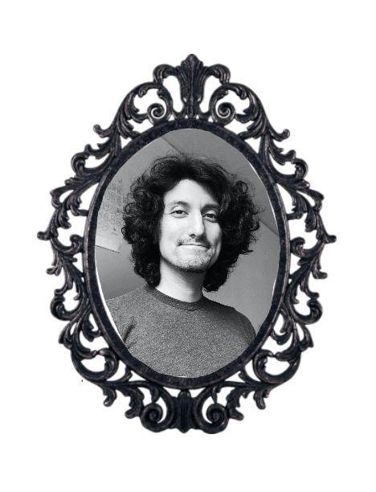
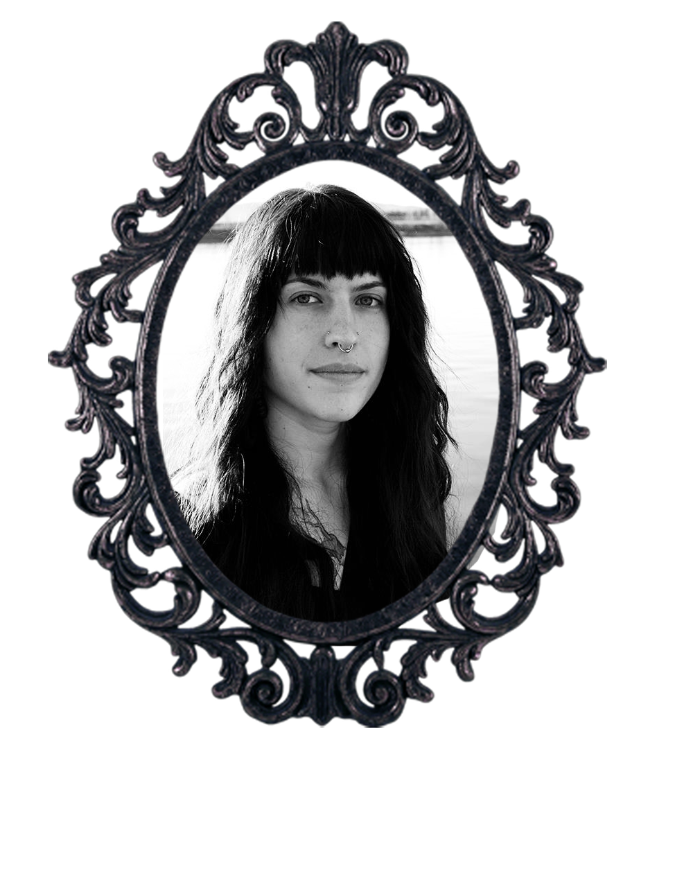

Dee Watson
Dee is a human person who cares about body goodness and feeling deeply. They came to tarot recently, seeking a way to bring an embodied spiritual practice into a daily routine (particularly important while learning the cerebral skill that is software development), and feel delighted by the magick of stepping outside your mind with card readings.
Franco Ortega
Franco is a longtime Portlander who enjoys biking around the city, climbing artificial rock walls, playing boardgames, and making fantasy world maps. A tarot reading was one of the many nudges that led him down the road of software development.
Katie Jones
Katie, originally from Santa Cruz but a current resident of Portland, enjoys playing video games, painting, photography/video production, adventures, tarot, and petting any cool animal she finds. Along with Franco, a tarot reading was part of the push that helped her pursue software development.
Rhone Lachner
Rhone is a software engineer, massage therapist, musician, and nature enthusiast seeking to holistically blend the tools and knowledge of old with modern and emerging technologies. They have a lifelong history in divinatory practices and hope to help others attain insight through the archetypal guidance of Tarot.
